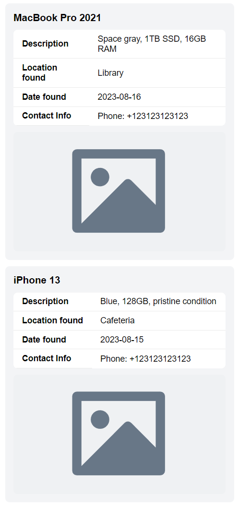

Застосування JS у власнову застосунку
Я додав JavaScript файл, який завантажує дані про знайдені предмети з файлу `data.json` та відображає їх на сторінці. Скрипт завантажує дані після завантаження сторінки, а потім рендерить кожен предмет у вигляді елементів списку. Кожен елемент включає назву, опис, місце та дату знаходження, а також зображення предмета.

document.addEventListener('DOMContentLoaded', function () {
// Fetch data from data.json
fetch('data.json')
.then(response => response.json())
.then(data => {
renderItems(data)
})
.catch(error => console.error('Error fetching data:', error))
/**
* Renders a list of items into the DOM.
* @param {Array<
* {name: string, description: string, location: string, date: string, imagePath: string, contacts: string}
* >} items - The list of items to render.
*/
function renderItems(items) {
const itemsList = document.querySelector('.items')
itemsList.innerHTML = '' // Clear the list before adding new items
items.forEach(item => {
const itemElement = document.createElement('li')
itemElement.classList.add('item')
itemElement.innerHTML = `
<h3>${item.name}</h3>
<table>
<tr>
<th>Description</th>
<td>${item.description}</td>
</tr>
<tr>
<th>Location found</th>
<td>${item.location}</td>
</tr>
<tr>
<th>Date found</th>
<td>${item.date}</td>
</tr>
<tr>
<th>Contact Info</th>
<td>${item.contacts}</td>
</tr>
</table>
<img alt="Item Image" src="${item.imagePath}" width="200" />
`
itemsList.appendChild(itemElement)
})
}
})